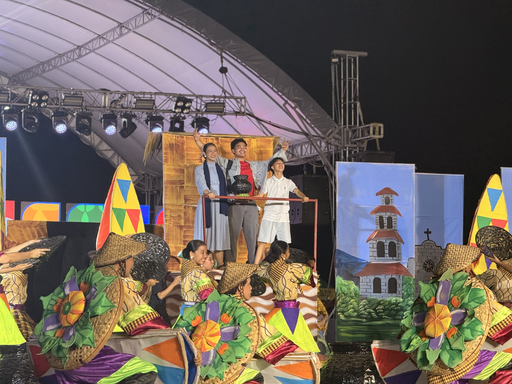
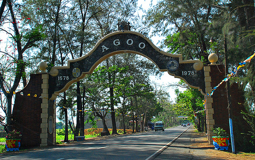

Municipality of Agoo, La Union

History
Agoo is one of the oldest towns in La Union and was established during the Spanish colonial period. It served as an important trading port and played a significant role in the spread of Christianity in Northern Luzon.

Culture & Heritage
Agoo is known for its deep religious traditions and vibrant community life. The town celebrates various fiestas and cultural festivals that reflect its rich Ilocano heritage.

Tourism & Landmarks
Agoo is home to famous landmarks such as the Basilica Minore of Our Lady of Charity, Agoo Beach, and the Marcos Bust. These attractions make it a growing tourism destination in La Union.
Mission
To promote sustainable tourism while preserving the cultural identity and natural beauty of Agoo.
Vision
To become one of the leading heritage and eco-tourism destinations in Northern Luzon.